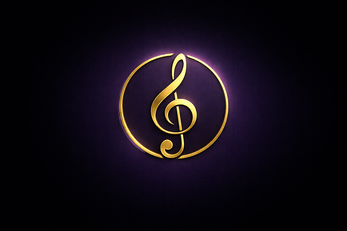

SOBRE MÍ
Soy desarrollador de videojuegos utilizando el motor Unity y el lenguaje C#. Me interesa especialmente la creación de mecánicas de juego, buscando que cada sistema sea dinámico, claro para el jugador y aporte a la experiencia general del juego.
Además de la programación, también disfruto trabajar en otros aspectos del desarrollo como efectos de sonido, música y ambientación, ya que considero que el audio es una parte fundamental para darle personalidad y emoción a un videojuego. Me gusta experimentar con distintas ideas y combinar programación, diseño y sonido para crear experiencias interactivas completas.
Constantemente sigo aprendiendo y desarrollando nuevos proyectos para mejorar mis habilidades y explorar diferentes estilos y mecánicas dentro del desarrollo de videojuegos.
MIS JUEGOS
Gameplay de Sphere Dominion
SPHERE DOMINION
Género: Arcade, Supervivencia 3D
Engine: Unity
Plataforma: PC
Es un juego arcade de supervivencia en 3D donde controlas una esfera dentro de una arena flotante. Tu objetivo es empujar a los enemigos fuera de la plataforma antes de que ellos te derriben. A lo largo de la partida puedes obtener habilidades especiales como fuerza, invisibilidad y una onda expansiva para enfrentarte a enemigos cada vez más fuertes, incluyendo un Mini Boss y un jefe final.
Roles y responsabilidades:
- Diseño y programación de mecánicas principales (movimiento, empuje, habilidades).
- Diseño de sistemas de oleadas y progresión de enemigos.
- Implementación de efectos de sonido y música para ambientación y feedback jugador.
- Diseño de niveles y balance de dificultad.
MÚSICA
Una parte fundamental de mis proyectos. Aquí puedes escuchar algunas de las composiciones y diseños de sonido que he creado.

Banda sonora original
BANDA SONORA DE SPHERE DOMINION
Banda sonora original compuesta para Sphere Dominion, incluyendo música ambiental, temas de combate y efectos de sonido implementados en Unity.
TEMA PRINCIPAL - "ARENA DE COMBATE":
ROLES MUSICALES:
- Composición musical (temas de gameplay, menús).
- Diseño e implementación de efectos de sonido (SFX).
- Mezcla y ambientación sonora en Unity.
Composición original
MÚSICA Y SFX - SCREEN THEME
Tema principal del menú compuesto para un prototipo de juego indie. Diseñado para crear una introducción ligera y atmosférica al mundo del proyecto. Construido como un bucle continuo para soportar la navegación prolongada en el menú.
TEMA PRINCIPAL - "CHILL":
ROLES MUSICALES:
- Composición musical.
- Diseño de sonido.
- Mezcla y producción.
CONTACTO
Puedes contactarme a través de los siguientes medios: